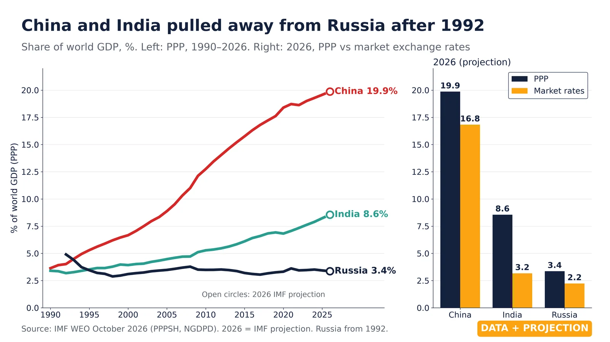
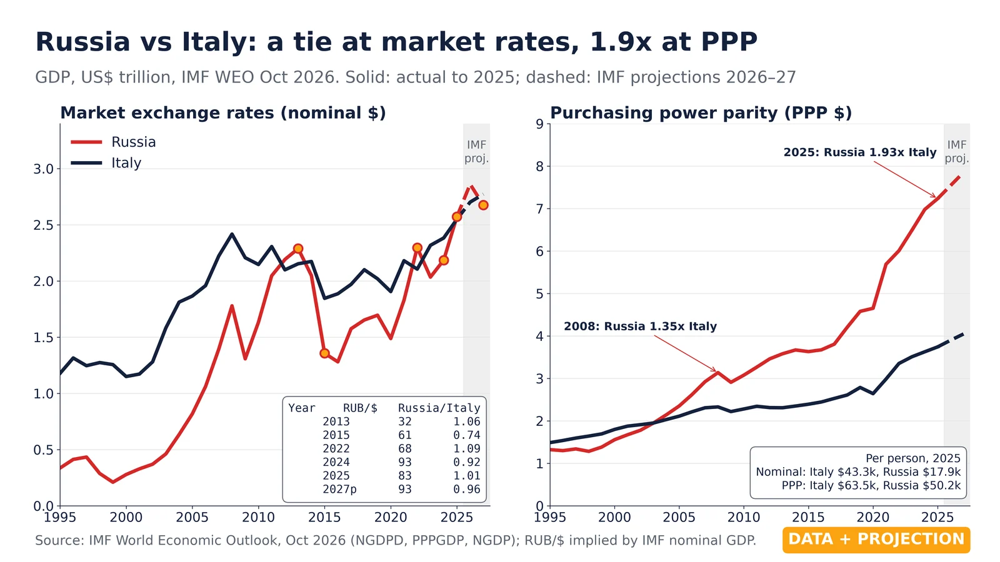

Q4. Russia Ruble

Rubles per dollar, monthly average (OECD): 84.8 in Sep 2026, peak monthly average 110.2 in Mar 2022. The 1998, 2014 and 2022 ruble collapses each followed a combination of oil weakness, sanctions or default.

2026 share of world GDP (PPP): China 19.9%, India 8.6%, Russia 3.4%. IMF WEO October 2026 projection.
Data + Projection
- 2026 (Projection): the IMF’s October 2026 WEO puts China at 19.9%, India at 8.6% and Russia at 3.4% of world GDP at purchasing-power parity. Arouet’s chart, citing the April edition, shows the same except India at 8.5%.
- 1992–2026 (Data to 2025): Russia’s PPP share fell from 4.9% in 1992 to 3.4%, while China rose from 4.0% to 19.9% and India from 3.2% to 8.6%.
- 2026 at market exchange rates (Projection): China 16.8%, India 3.2%, Russia 2.2%. India is much closer to Russia than to China on this basis.
- 2010 to 2026 (Data and Projection): at market rates India rose from 2.5% to 3.2% while Russia went from 2.4% to 2.2%. The divergence is real but smaller than PPP suggests.
- Basis: the chart is correctly labelled PPP. PPP lifts poorer economies with low domestic prices, which is why India’s share is 2.7 times its market-rate share.
- Omitted: the summit commentary in the post (“what’s the point of the meeting with Russia”). That is opinion, not data.
The PPP figures are right, but the “different league” framing fits China far better than India. At market exchange rates, the basis that matters for trade and finance, India is 3.2% of world GDP and Russia 2.2%, against China’s 16.8%.
Rebuttal: imf.org: external/datamapper/api/v1/NGDPD
Original post: Michael A. Arouet, Nov 2026
Sources: imf.org: external/datamapper/api/v1/PPPSH/CHN/IND imf.org: external/datamapper/api/v1/NGDPD imf.org: en/publications/weo/issues/2026/10/13/wo Original post (X)

2025 GDP: Russia $2.57T vs Italy $2.55T at market rates; $7.24T vs $3.74T at PPP. IMF WEO Oct 2026.
Data + Projection
- 2025 (Data): the IMF’s October 2026 WEO puts Russia’s GDP at $2.57T and Italy’s at $2.55T at market exchange rates. Russia is 1% larger, so Arouet’s “smaller than Italy’s” does not hold for the latest year.
- 2023–2024 (Data): Russia was smaller, $2.04T vs $2.32T in 2023 and $2.19T vs $2.38T in 2024, when the ruble averaged about 86 and 93 per dollar. The claim was true then.
- 2013–2027 (Data + Projection): the ratio swings with the ruble: 1.06 in 2013 at 32 per dollar, 0.74 in 2015 at 61, 1.09 in 2022 at 68, 1.01 in 2025 at 83. The IMF projects 1.06 in 2026 and 0.96 in 2027 as the ruble weakens to about 93.
- 2025 at PPP (Data): Russia’s output is $7.24T against Italy’s $3.74T, 1.93 times, up from 1.35 times in 2008. Arouet dismisses PPP for Russia; the IMF publishes both.
- 2025 per person (Data): Italy $43,270 vs Russia $17,864 at market rates (2.4 times); $63,508 vs $50,241 at PPP. Russia has 144 million people, Italy 59 million.
- Note: the post ID given (2123492707704213809, Nov 19) could not be read. Arouet repeats the claim in his Nov 21 post (2124136855641768039).
As a statement about size, the claim is out of date: on the IMF’s latest data the two economies are level at market rates and Russia is nearly twice Italy at PPP. It holds per person, where Italy is far richer, and it may hold again in 2027 if the ruble weakens.
Rebuttal: imf.org: en/publications/weo/issues/2026/10/13/wo
Original post: Michael A. Arouet, Nov 2026
Sources: imf.org: en/publications/weo/issues/2026/10/13/wo api.imf.org: external/sdmx/2.1/data/IMF.RES,WEO/RUS+I Original post (X) Original post (X)